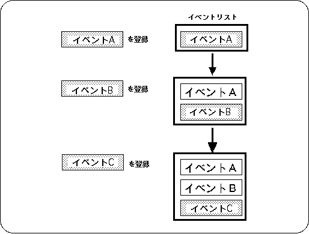
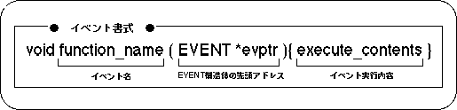
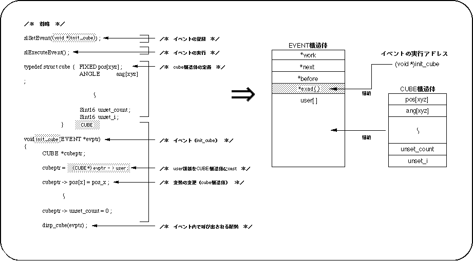
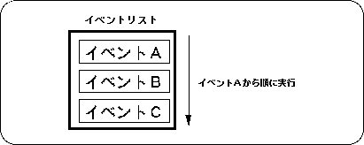

Return to previous page | Return to menu | Go to next page
Here, we will explain the actual event processing using SGL library functions.
In order to use event processing in SGL, it is necessary to first initialize the buffer and event list related to the event.
Use the library function "slInitEvent" to execute event initialization in SGL.
Caution
If event processing is used without initializing the event, it will not be consistent with the uninitialized buffer or event list, and in the worst case, the CPU may stop. (For details, refer to “10-5: Notes on event processing”).
To perform event processing, events must be registered as an event list in the order of execution.
Events are added to the event list by the event registration library function “slSetEvent” as shown in Figure 10-4.
The registered events are sequentially registered at the end of the event list, and are executed in order from the top of the event list by the event execution library function “slExecuteEvent”.

Use the library function “slSetEvent” to register an event.
See the next section for the event format and structure.
The function group to be registered as an event must take the format shown in Figure 10-5.

Events registered and executed are managed by the EVENT structure.
In the EVENT structure, the execution address of the event to be registered and the structure for variables used in the event are stored, and these two are used to manage the event.

-Functions registered as events are controlled by the EVENT structure.
-Member "* exad ()" contains the execution address of the registered event,
Member “user []” stores the structure used in the event.
The structure is used for variables in the event, but
Note that the structure does not exceed the user area (size: 112 bytes).
If you want to use more variables, use
Extend the user area using the WORK structure etc.
Please make sure that the structure itself is also stored separately.
When using various variables in an event, the variables must be defined as a structure.
Events registered in the event list are executed in order by the event management function.
For example, when event A, event B, and event C are registered in the event list in order using the library function “slSetEvent”, each event is executed according to the event list in the order shown below.

Event execution
The library function “slExecuteEvent” is used to execute the event.
Figure 10-7 Event execution